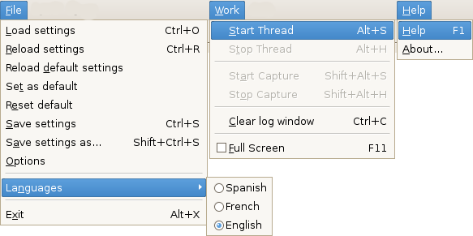

Prev: Reference --- ↑Home --- Next: Reference → Video Window
DVGrabGUI 0.9.4
Reference → Window Menus

-
File:
-
Load settings
Load settings from a .dvs file.
-
Reload settings
Reload the settings from the current .dvs file
(might be the same as "Reload default settings" below).
-
Reload default settings
Reload the default settings
(from ~/.dvgrabgui/default.dvs.xml).
-
Set as default
Set current settings as default
(saving them in ~/.dvgrabgui/default.dvs.xml).
-
Reset default
Reset default settings (overwriting
~/.dvgrabgui/default.dvs.xml – you must then
reload it if you want: "Reload default settings").
-
Save settings
Save current settings in current .dvs file.
-
Save settings as…
Save current settings in another .dvs file.
-
Options
Show the Settings tab.
-
Languages
Select the GUI language. Note that the corresponding locale
must be installed on your system: under Debian Etch, for example,
only the locale selected during installation is available by default…
-
Exit
Quit the app.
-
Work:
-
Start Thread
Start the capture thread (i.e. to enter the "stand-by" mode).
-
Stop Thread
Stop the capture thread (i.e. to leave the "stand-by" mode).
-
Start Capture
Start the video recording.
-
Stop Capture
Stop the video recording.
-
Clear log window
Clear the log window.
-
Full Screen
Go in/out full screen.
-
Help:
-
Help
Show the help window.
-
About…
Show the traditional "About…" dialog box.
Prev: Reference --- ↑Home --- Next: Reference → Video Window
(c) 2006, 2007, 2008 Bastien Montagne (montagne29 at wanadoo dot fr).
Project hosted at sourceforge.net/projects/dvgrabgui.